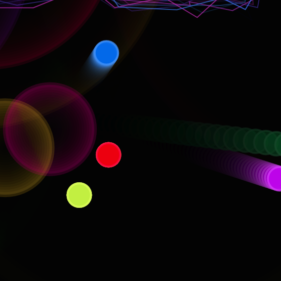
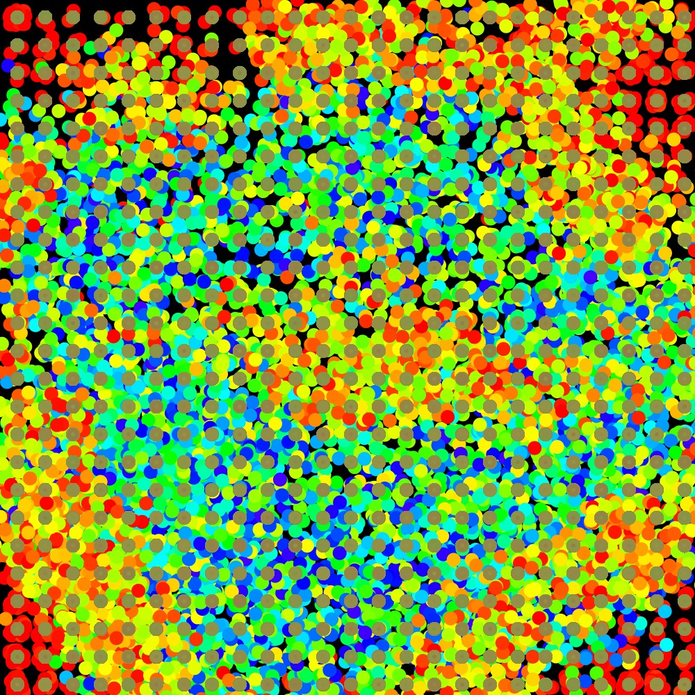

How I learned to code

In our first semester my team built a browser game with p5.js. Several people join from their phones and steer a dot using the accelerometer and gyroscope — the goal: knock everyone else out of the arena and be the last one standing.
The semester's main focus was actually learning Java — design patterns, Git, computational thinking, even a text-based adventure game. Less fun to look at, so here I'm only showing the visual highlights.

Using p5.js again, I made my own take on a painting app — randomised colours, random brush positions and a reset button.
A Generative Design course rounded out the semester. Below is what I made for my very first coding portfolio.
My main takeaway: coding feels approachable with the right tools and guidance. For me that guidance was Daniel Shiffman, aka the Coding Train.